Data Engineer — Paris, France
Hi, I'm Vaishnavi.
I turn raw data
into pipelines that hold up.
I hold an Applied Master's in Data Engineering for Artificial Intelligence from Data ScienceTech Institute (DSTI), Sophia-Antipolis, France, built on a Bachelor's in Computer Science and a Master's in Scientific Computing from the University of Pune, India. Since then I've worked across ETL pipelines, Databricks and PySpark, and NLP document parsing — I'm a versatile, curious engineer looking for the next fast-paced opportunity to grow and make a difference.
"In a world where time is fleeting and opportunities scarce, our choices define our destiny."
Artificial Intelligence touches every part of our lives, even where it isn't obvious. It's a versatile tool — one that lets us reimagine how we integrate information, analyze data, and make decisions.
I'm a versatile tech and data enthusiast, always drawn to where data engineering, AI, and thoughtful software meet. Since completing my Applied Master's in Data Engineering for AI, I've built ETL pipelines, Databricks and PySpark workflows, and NLP document-parsing systems in production. I'm now looking for interesting opportunities in fast-paced environments — the kind where I can keep growing and make a real difference.
Download my CVExperience
-
01/2025 – 01/2026
Data Engineer Intern / Data Systems Engineer
DatumLocus, Lille, France — an agriculture-focused data company
Built multi-source ETL pipelines across 20+ agricultural data sources, including USDA NASS, for clients across the US, France, the EU, and Asia. Developed Databricks and PySpark notebooks for large-scale transformation, alongside document-parsing and NLP preprocessing pipelines for semi-structured inputs. Built multi-model time-series forecasting powering a client-facing Power BI dashboard used daily by stakeholders, with structured logging, automated testing, Airflow orchestration, and GitLab CI/CD — cutting debugging time by 30%.
-
02/2022 – 05/2023
Scientific Data Trainee
Inter-University Centre of Astronomy & Astrophysics, Pune, India
Extracted and processed satellite data from ISSDC/ISRO archives, interfacing with NASA's HEASARC Parameter Interface Library to support AstroSat-CZTI data analysis. Led the release of pipeline version 3.0, automating data retrieval and processing in Python, C, and C++, and resolving memory leaks with Valgrind for a 25% performance improvement. Maintained technical documentation and mentored two junior trainees on the pipeline codebase.
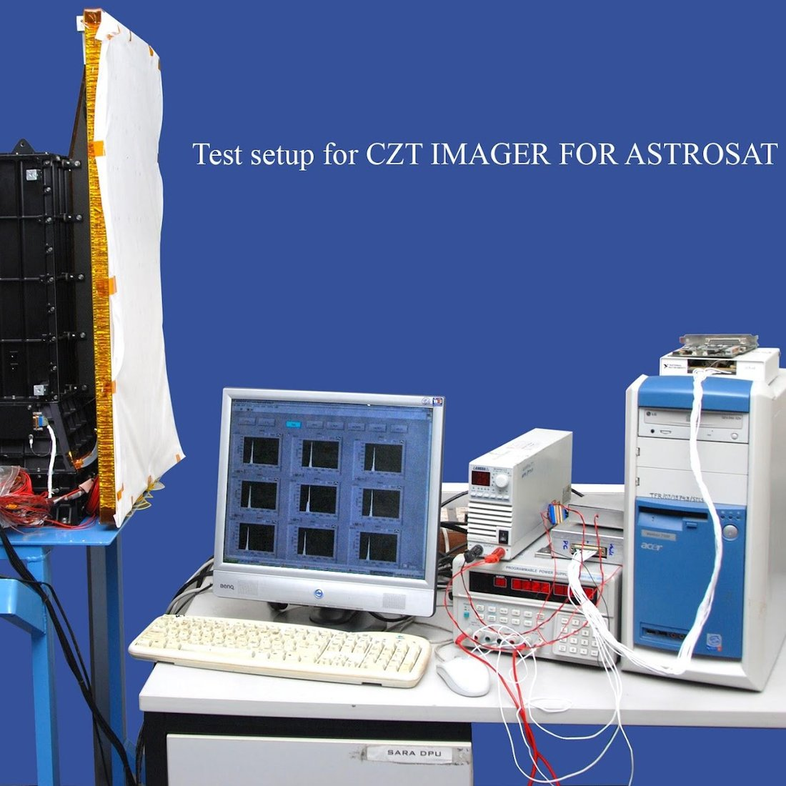
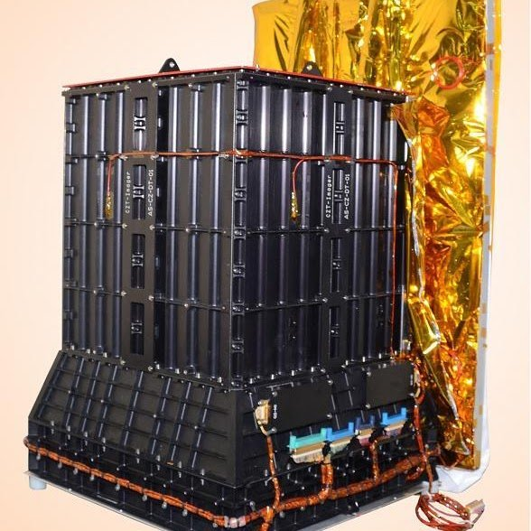
CZTI instrument and ground test setup — 500 GRBs detected (2015–2022)
-
01/2021 – 06/2021
Software Engineer Intern
KonsepWorks, Pune, India
Developed and managed a client's golf store website end to end — frontend, backend, UX/UI, WordPress, and server operations. Led the upgrade and maintenance of the site and oversaw the design of four sites in total, migrating golfsurprizewin.com, golfsurprize.co, targetscores.eu, and a matrimony site from PHP 5.6 to 7.4, and integrating PayPal.
Target Scores — a golf rewards platform built during this internship
Education
-
2023 – 2025
Applied MSc, Data Engineering for AI
Data ScienceTech Institute (DSTI), Biot (Sophia-Antipolis), France
Thesis: an NLP-based book rating and recommendation system, deployed on AWS.
-
2019 – 2021
MSc, Scientific Computing
Pune University, India
Research: circulant matrices in public-key cryptography (algebraic cryptography, NTL/C++). Master's project: Golfsurprize. Elective: Artificial Intelligence.
-
2016 – 2019
BSc, Computer Science
Pune University, India
Project 1 — Placement Cell (database and documentation): PHP, CSS, MySQL. Project 2 — Event Management System (frontend, backend): AWT, Swing, Java.
Skills
Data pipelines
Languages & tools
Data collection & NLP
Visualisation
Cloud
Certifications
Languages
Featured project
Book rating prediction — Goodreads
A Python machine-learning project predicting book ratings and quality using regression and classification methods, built end to end as a full ML pipeline and deployed on AWS.
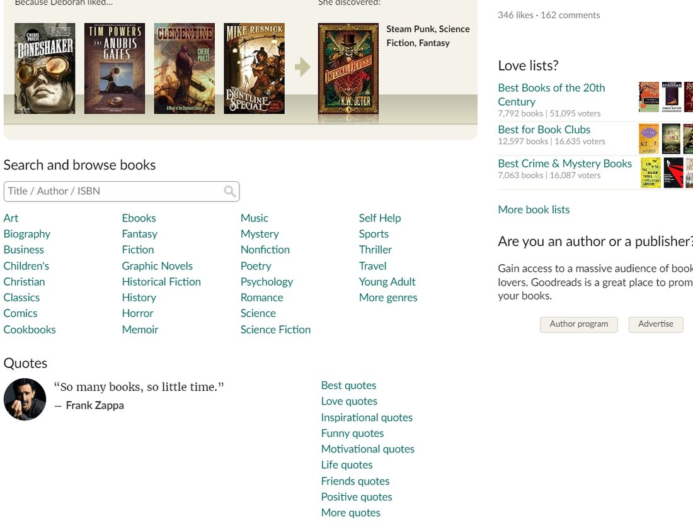
Goodreads is the world's largest community of book lovers, where readers discover new books, genres, and quotes. This analysis set out to predict book ratings using a range of machine learning methods.
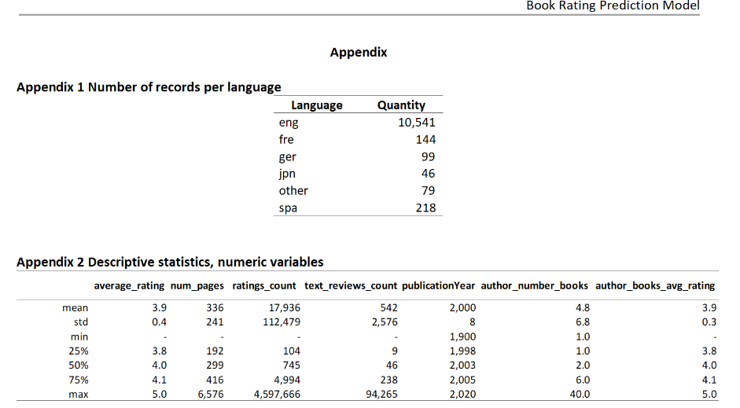
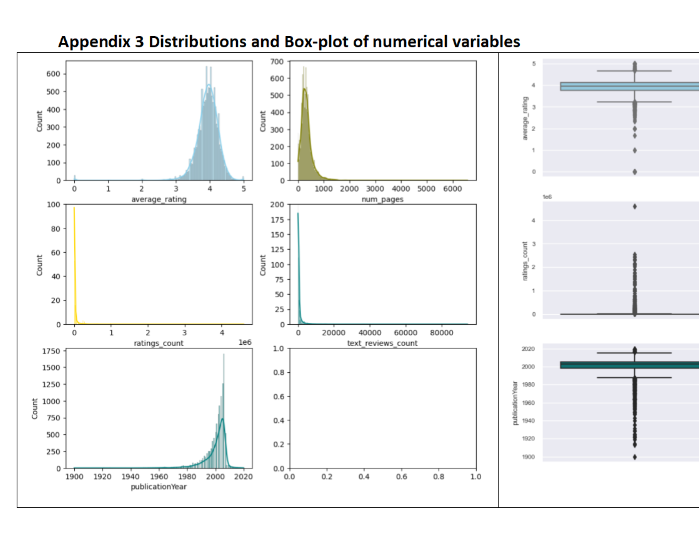
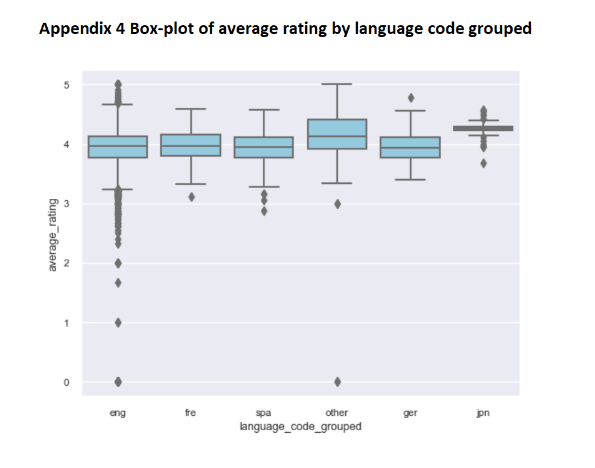
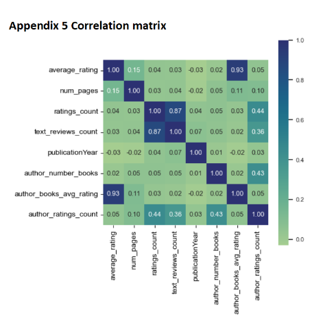
A model like this could help predict whether a book would be well or poorly rated by the reading community, letting readers focus on titles more likely to suit them. It's worth noting the available characteristics are limited to books already evaluated in the Goodreads database — recommendations based on reader-specific preferences would need a wider feature set.
More work
-
AI-powered energy intelligence platform Ongoing
A data platform ingesting real EU energy-market data (ENTSO-E, Eurostat) through Spark and dbt across raw, silver, and gold layers, orchestrated with Airflow, with an LLM-based RAG system for natural-language insight generation.
-
GoodFood
A recipe-box delivery concept built around an XML/XSD data model, with XSLT transformations rendering the same data as HTML, XML, and JSON.
-
Circulant matrices in public-key cryptography
Coursework examining whether circulant matrices can speed up public-key cryptosystems — covering fast multiplication over finite fields and easy matrix inversion.
-
Application-layer assessment
Written coursework on application-layer networking concepts.
-
AI assessment
Written assessment for an AI module.
Other work
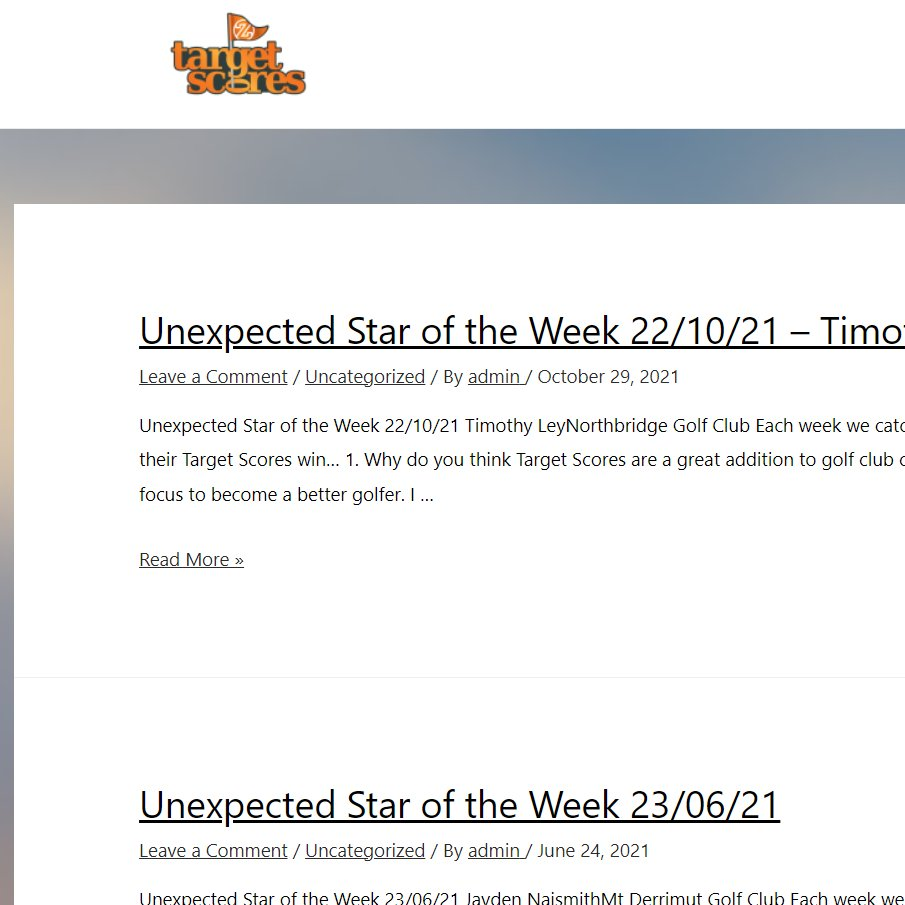
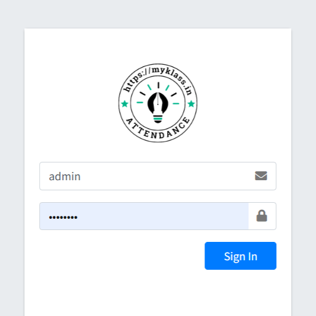
WordPress websites
Design, build, and maintenance work across several client WordPress sites.
Canva design
Poster and invitation-card design work.
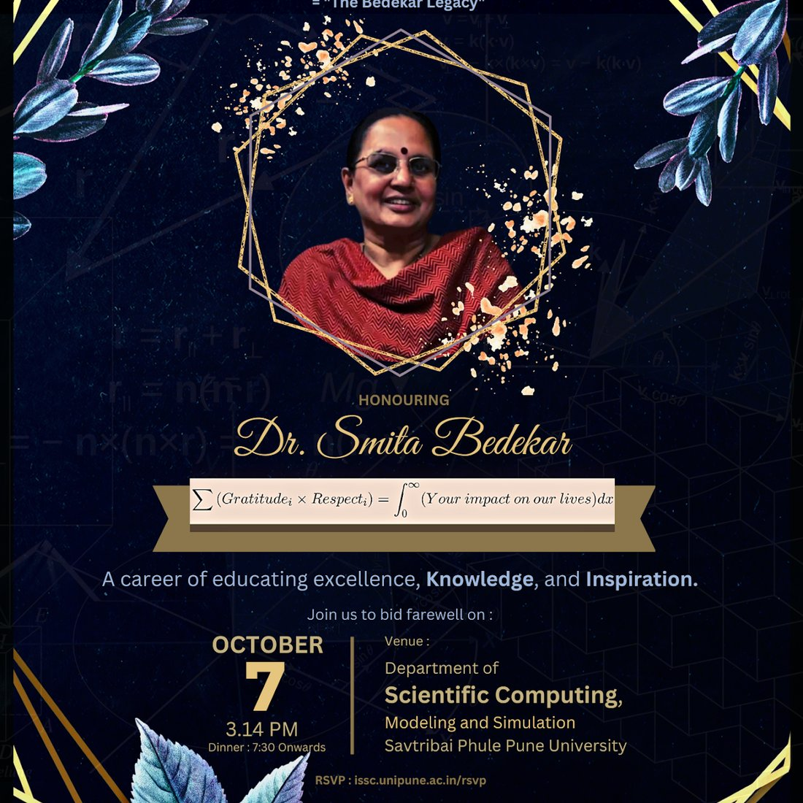
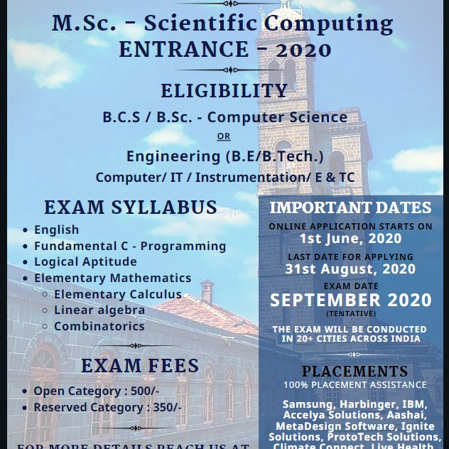
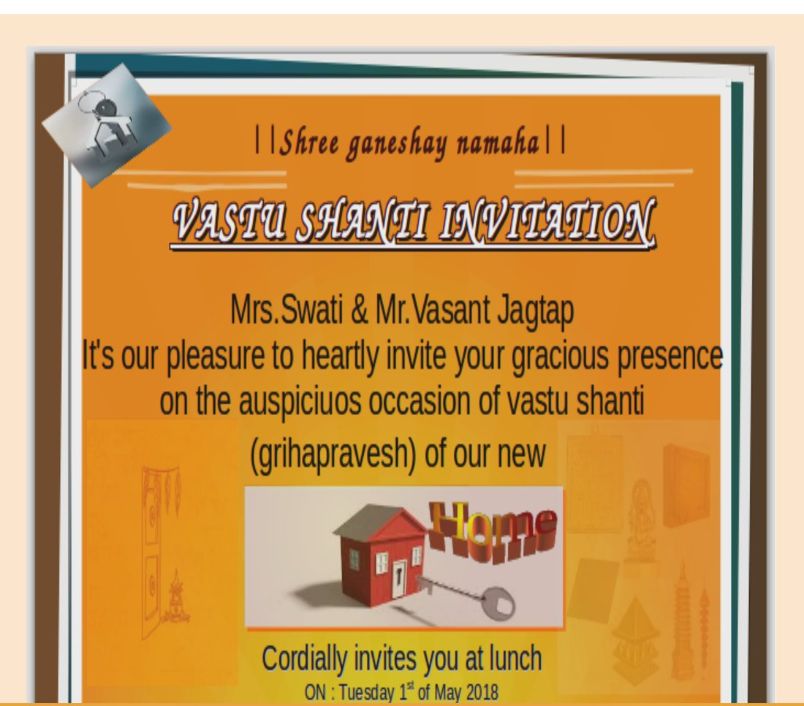